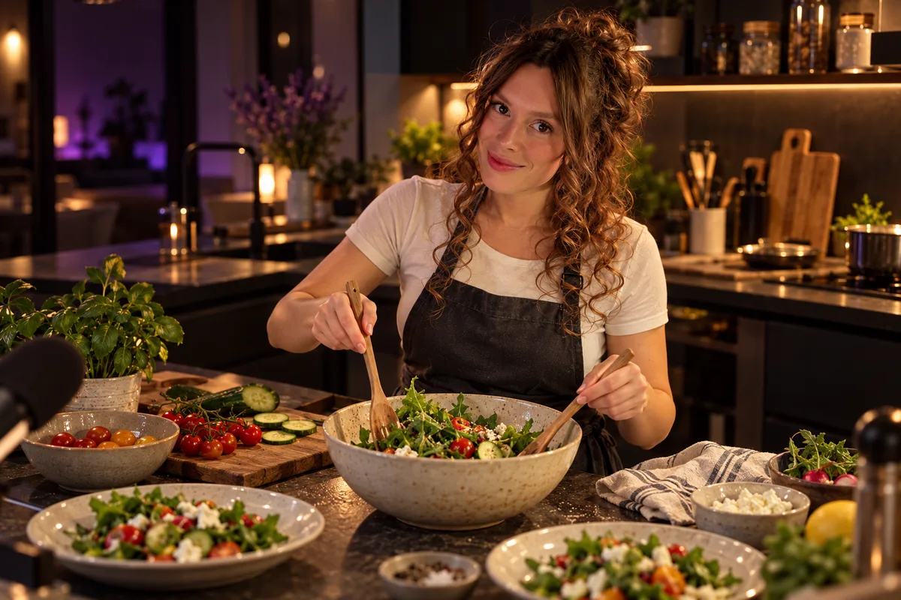
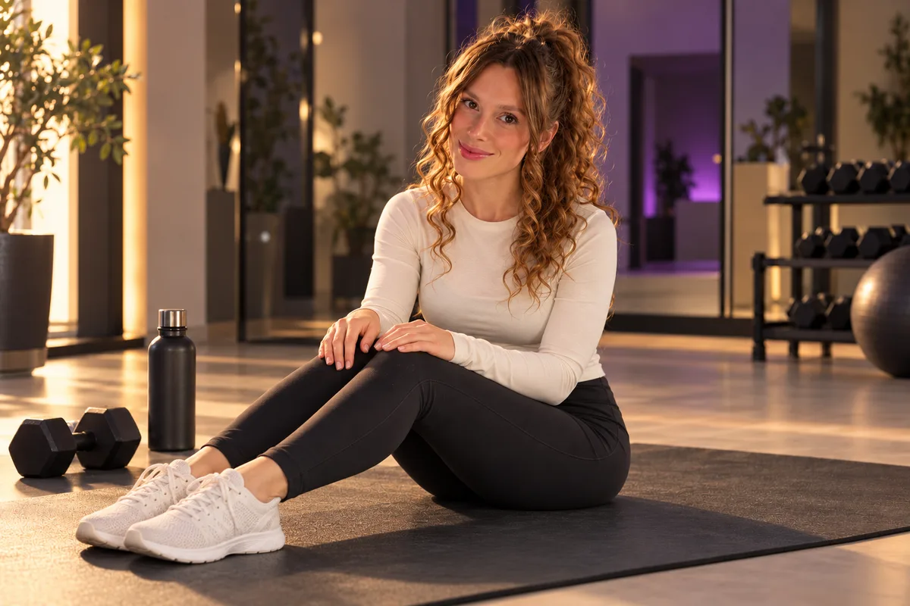
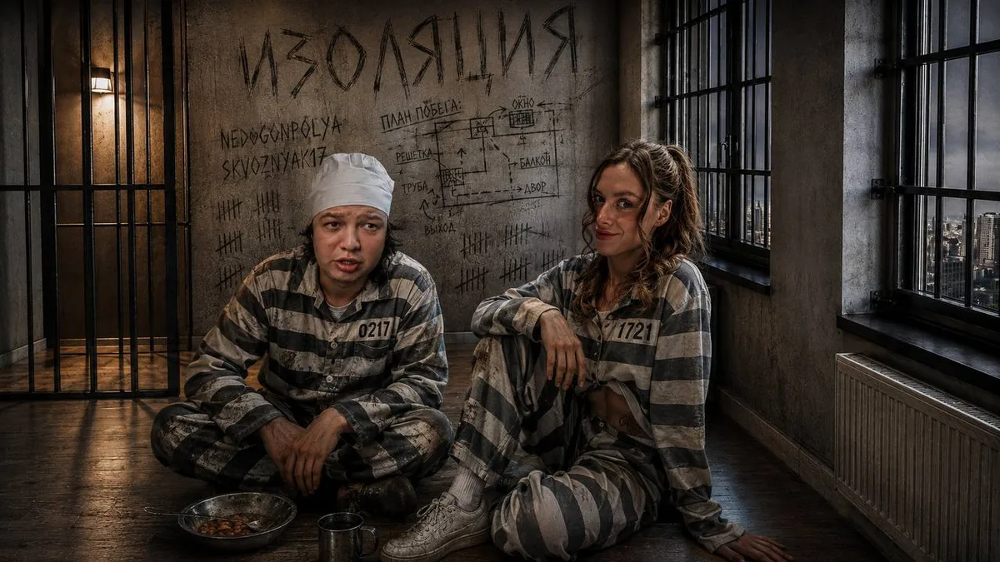

Кукинги с компанией.
Меню решает чат, на кухне — стримеры, а правила каждый раз с подвохом.
Открыть раздел «Кукинги»NEDOGONPOLYA
Сейчас, я почти готова…
Готовим первый кадр. Остальные истории подгрузятся по пути.
ПОЛИНА НЕДОГОН ✳ IRL-СТРИМЕР
Тебя тут ждут.
Стримы из дома и из поездок.
Игры, тренировки и разговоры с чатом.
Один эфир.
Тысяча историй.
Может провести тренировку, спонтанно улететь в другую страну, а вечером — просто поболтать с тобой.
Полина Недогон, она же NEDOGONPOLYA, — IRL-стример. В её эфирах есть акробатика, игры с чатом, путешествия и обычная жизнь, которая часто превращается в приключение.
До больших поездок и длинных эфиров были тренировки и работа с детьми. Спорт остался с ней — теперь нередко прямо в кадре.
Полина — стример и автор блога.
Разговоры с чатом, игры, кукинги с гостями
и большие совместные проекты.
Срез на . Среднее число зрителей — за последние 30 дней. Данные: TwitchMetrics и публичный Telegram.

Меню решает чат, на кухне — стримеры, а правила каждый раз с подвохом.
Открыть раздел «Кукинги»
Акробатика, растяжка и тренировки. А когда приходит сезон — сноуборд: спорт появляется и в её блоге.
Открыть раздел «Спорт»
Игры, разговоры с чатом, косплеи, «Изоляция» — и моменты, которые зрители сохранили в клипы.
Открыть раздел «Эфиры»Фестивали, склон и монтаж до утра.
Ещё несколько вещей, которыми
Полина делится в своём блоге.
ДУБАЙ / LEVA2K И ENZZAI
Водная полоса препятствий, попытки сальто и много смеха. Хорошее знакомство с совместными IRL-эфирами Полины.
Выбери страну.
Открой её историю.
Фотографии, эпизоды со стримов и маленькие истории из поездок Полины.
Нажми на область страны, метку или её название в списке.
Истории поездок по странам и годам. Пейзажи для атмосферы и личные кадры Полины подписаны отдельно.
Гости и участники совместных эфиров.
Истории, которые случились вместе.
Работа с детьми, гимнастика и первые главы стриминга. Спорт и общение уже рядом.
Из её Telegram ↗Спонтанный переезд, работа и освоение нового города. Полина пишет о жизни, о которой давно мечтала.
Рассказ о переезде ↗Первое путешествие за границу в одиночку. Мумбаи, Гоа и впечатления, которые превратились во влог.
Смотреть историю ↗Бали, Таиланд, Вьетнам, поездки в Сочи и семейные эфиры из Саратова. Следующая глава — на стриме.
Открыть карту ↑ЛУЧШЕЕ В ЭФИРЕ — КТО-ТО ПО ТУ СТОРОНУ ЭКРАНА